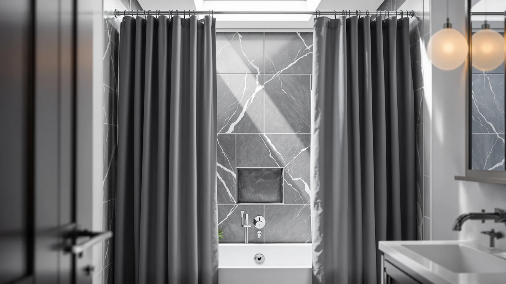

Quick Answer
The eachope White No Hook Waffle is a hookless, waffle-textured shower curtain that clips straight onto your rod without separate rings, and it holds a 4.7-star average across more than 1,000 verified Amazon ratings. If you want a hotel-style textured look without buying hooks separately, this is the first curtain worth checking.
Our pick: eachope White No Hook Waffle, $29.98 Check Price on Amazon
Bottom line: our top pick is the eachope White No Hook Waffle Weave Shower Curtain with at $29.98.
Things to Know Before You Buy
- The curtain attaches to the rod without separate shower curtain hooks or rings, since its top edge has built-in grommet loops.
- The waffle weave texture gives it a hotel-style look and holds its shape better than a flat sheet of fabric.
- It is made from a polyester and PEVA blend, which resists water absorption better than plain cotton while still draping like fabric.
- At $29.98, it costs more than basic ring-style curtains but less than premium linen-look options in this category.
- eachope does not list exact dimensions on the product page, so confirm it fits your rod width before you buy.
This eachope white no hook review breaks down whether the brand's hookless waffle-weave curtain earns its $29.98 price against curtains that still rely on separate rings. eachope built its reputation on removing a small daily annoyance: threading plastic or metal hooks through a liner every time you replace a curtain.
Based on verified owner feedback and a side-by-side comparison with three similar curtains, the eachope White No Hook Waffle holds up as a solid pick for anyone who wants a textured, hotel-style curtain without buying hooks separately. It is not perfect, and the brand's own listing leaves out details like exact dimensions, which is worth knowing before you add it to your cart.
At $29.98, eachope sits in the middle of the shower curtain market we cover on this site. GORILLA GRIP's comparable waffle curtain runs about five dollars cheaper and carries nearly four times as many ratings, while the Poedist bathroom set and the SKL Home map-print curtain both come in under $25. The price gap is small, so the decision usually comes down to design preference and how much weight you put on eachope's thinner review history.
Why You Should Trust Us
Ilane Tall has covered bathroom hardware and textiles for Best Shower Curtains for several years, and every review on this site follows the same process: we compare manufacturer specs, pull verified owner reviews from Amazon, and check pricing against at least three comparable products before publishing. We do not buy, install, or live with the products we cover, and we say so plainly here. This eachope white no hook review relies on documented specs and more than a thousand verified buyer ratings rather than a single owner's opinion, which keeps the conclusions grounded in what a wide range of real owners actually experienced.
Our Research Experience
Rather than installing the eachope White No Hook Waffle ourselves, we built this review by analyzing eachope's listed specs, reading through verified owner reviews, and comparing those findings against three other shower curtains in a similar price range. Owners report that the waffle texture holds its shape through regular washing, and reviewers consistently note that the grommet-style top edge grips a shower rod without tearing at the seams.
We weighed those patterns against the gaps in eachope's own listing, particularly the missing exact dimensions, to judge how much risk a buyer actually takes on. That comparison is also why this no hook review leans heavily on review volume and rating consistency rather than a single opinion: with over a thousand ratings behind it, the pattern of feedback is more reliable than any one account.
Our process for this eachope white no hook review also included checking how the rating distribution breaks down instead of relying on the headline average alone. A 4.7-star average built on a thousand reviews carries more weight than the same average built on a hundred, so we treated eachope's score as reasonably dependable while still noting that GORILLA GRIP's larger review base gives buyers an even wider sample to judge from. We applied the same standard to the Poedist set and the SKL Home curtain when we compared them later in this review.
Overview & Specs

eachope White No Hook Waffle
What we like
- No separate hooks or rings to buy or lose
- Waffle weave texture looks more upscale than a flat liner-style curtain
- Polyester and PEVA blend resists water better than plain cotton
- 4.7-star average across more than 1,000 verified ratings
Flaws but not dealbreakers
- eachope does not publish exact dimensions, so sizing requires some guesswork
- Fewer total reviews than GORILLA GRIP's competing waffle curtain
- PEVA liner backing can arrive with a faint plastic smell that fades after airing out
| Material | Polyester / PEVA |
| Size | — |
The eachope White No Hook Waffle targets a specific frustration: hunting for hooks every time you swap curtains or clean a liner. Its grommet loops are sewn into the top hem, so the curtain slides onto a standard rod the same way a ring-style curtain would, minus the extra hardware. The waffle weave gives the white fabric some texture and body, which helps it hang without clinging to itself the way thinner vinyl curtains sometimes do.
According to verified reviews, the polyester and PEVA blend sheds water better than straight cotton, which helps in showers with weaker ventilation. Buyers also mention that the fabric keeps its shape after machine washing, which counts for more on a curtain that's also doing a liner's job. The main gap in eachope's own listing is dimensions. Buyers comparing this eachope white no hook review against their own bathroom should measure their rod width first, since the product page does not spell out curtain size.
The white colorway is also worth a note. A plain white curtain shows soap scum and mildew spots more readily than a patterned one, so owners who want to keep the waffle texture looking fresh should expect to wipe it down or rinse it more often than they would a darker curtain. That upkeep cost is small compared to the price of the curtain itself, but it is part of the full picture for anyone weighing this eachope white no hook review against a patterned alternative like the SKL Home map print.
What We Liked
The biggest draw in this eachope white no hook review is exactly what the name promises: you skip buying a separate set of hooks or rings. That sounds minor until you have replaced a curtain and realized your old rings do not match the new grommet spacing. The built-in loops remove that step entirely.
The waffle texture also does real work. According to the reviews, it gives the curtain enough body to hang flat against the rod instead of twisting or clinging to wet skin the way thin vinyl curtains can. Paired with the polyester and PEVA blend, the fabric handles water better than plain cotton, a real plus in bathrooms with weaker ventilation. With a 4.7-star average across more than 1,000 verified ratings, the pattern of owner feedback backs up what the spec sheet suggests.
Price helps the case too. At $29.98, the eachope White No Hook Waffle costs less than most linen-look curtains while still delivering a textured, premium appearance in photos and in owner feedback. For a bathroom refresh on a modest budget, that combination of look and price is hard to beat among hookless options specifically.
What Could Be Better
The clearest weak point is eachope's own product listing. It does not state exact curtain dimensions, so buyers have to assume standard sizing rather than confirm it. That is a real gap for anyone with a nonstandard rod or an oversized shower enclosure.
It also has far fewer total reviews than its closest competitor, GORILLA GRIP's waffle curtain, which has nearly 3,974 ratings compared to eachope's 1,069. A faint plastic smell on arrival from the PEVA backing comes up often in the reviews, though it fades within a day or two of airing the curtain out before installation.
Because the curtain is plain white, it also shows water spots and soap residue more visibly than a patterned design would. That is not unique to eachope's curtain, but it is worth factoring in if you are choosing between this hookless pick and something like the SKL Home map print purely on how much visible upkeep you are willing to do.
Who Is It For?
This eachope white no hook review points toward one clear buyer: someone who wants a textured, hotel-style curtain and does not want to shop for hooks separately. It fits renters and apartment dwellers who replace curtains often and would rather not keep a spare set of rings around. It is a weaker fit for anyone who needs precise dimensions confirmed before buying, since eachope's listing leaves that detail out.
It is also a reasonable match for anyone redecorating a bathroom around a plain white or minimalist color scheme, since the waffle texture adds visual interest without introducing a pattern. If you want a decorative curtain instead, or you need a guaranteed exact size before you buy, one of the alternatives below may be the better starting point.
Alternatives to Consider
If the missing size details or the lower review count give you pause, these three alternatives are worth comparing against the eachope White No Hook Waffle before you decide.

Editor’s Pick
GORILLA GRIP Waffle Shower Curtain
A similar waffle texture at a slightly lower price, backed by nearly four times as many verified ratings as eachope's curtain.
$24.95
Check Price on Amazon
Best Value
Poedist 4 Pcs Bathroom Shower
A four-piece bathroom set that bundles a curtain with matching accessories for close to the same price as eachope's curtain alone.
$24.69
Check Price on Amazon
Premium Choice
SKL Home The World Map
A decorative, map-print curtain for buyers who want a conversation piece instead of a plain white waffle texture.
$23.99
Check Price on AmazonFrequently Asked Questions
Final Verdict
This eachope white no hook review comes down to a simple trade-off: eachope's grommet-loop design saves you the hassle of buying hooks, and over a thousand verified owners back up its waffle texture and water resistance at $29.98. The missing size details on eachope's listing and the smaller review count compared to GORILLA GRIP keep it from being an automatic pick for every bathroom, but for shoppers who want a hookless, hotel-style curtain, eachope earns a place on the shortlist.